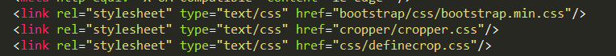
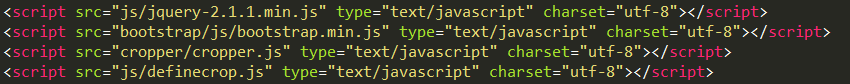
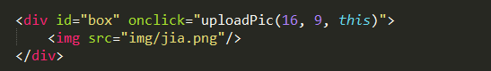
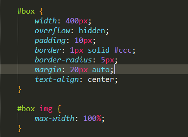

使用方法：
1: 引入jquery.js bootstrap.css bootstrap.js cropper.css cropper.js definecrop.css definecrop.js


2: 创建携带id的div, 包含默认初始图片, 根据上下文自定义样式


3: 对div追加方法，如：uploadPic(16, 9, this) 前两个参数为宽高比， 最后一个参数，存放截图的dom对象